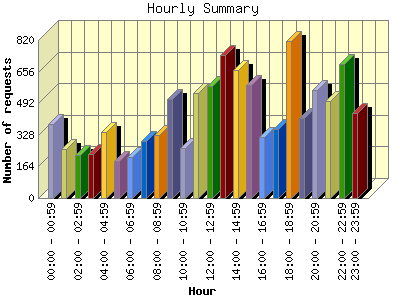
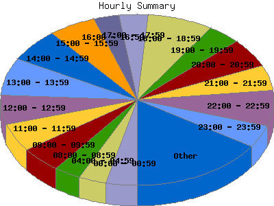

Report generated by Analog 6.0 and Report Magic 2.21
|
Web Server Statistics for "Harish Narayanan (hnarayan) - November 2005" Report generated by Analog 6.0 and Report Magic 2.21 |
The Hourly Summary identifies the level of activity broken down by each hour. Remember that one page hit can result in several server requests as the images for each page are loaded. This summary also compares the level of activity during working hours and after hours as a total for the report time frame.


| Hour | Number of requests | Number of bytes transferred | Percentage of the bytes | Percentage of the requests | |
|---|---|---|---|---|---|
| 1. | 00:00 - 00:59 | 384 | 12.834 MB | 2.88% | 3.68% |
| 2. | 01:00 - 01:59 | 252 | 25.084 MB | 5.62% | 2.41% |
| 3. | 02:00 - 02:59 | 221 | 12.861 MB | 2.88% | 2.12% |
| 4. | 03:00 - 03:59 | 226 | 14.583 MB | 3.27% | 2.16% |
| 5. | 04:00 - 04:59 | 341 | 16.379 MB | 3.67% | 3.26% |
| 6. | 05:00 - 05:59 | 190 | 5.324 MB | 1.19% | 1.82% |
| 7. | 06:00 - 06:59 | 214 | 8.054 MB | 1.81% | 2.05% |
| 8. | 07:00 - 07:59 | 294 | 13.193 MB | 2.96% | 2.81% |
| 9. | 08:00 - 08:59 | 326 | 14.224 MB | 3.19% | 3.12% |
| 10. | 09:00 - 09:59 | 516 | 18.226 MB | 4.09% | 4.94% |
| 11. | 10:00 - 10:59 | 258 | 7.892 MB | 1.77% | 2.47% |
| 12. | 11:00 - 11:59 | 546 | 18.857 MB | 4.23% | 5.23% |
| 13. | 12:00 - 12:59 | 580 | 17.022 MB | 3.82% | 5.55% |
| 14. | 13:00 - 13:59 | 743 | 38.797 MB | 8.70% | 7.11% |
| 15. | 14:00 - 14:59 | 662 | 18.198 MB | 4.08% | 6.34% |
| 16. | 15:00 - 15:59 | 585 | 27.330 MB | 6.13% | 5.60% |
| 17. | 16:00 - 16:59 | 317 | 16.924 MB | 3.79% | 3.03% |
| 18. | 17:00 - 17:59 | 358 | 18.568 MB | 4.16% | 3.43% |
| 19. | 18:00 - 18:59 | 816 | 27.385 MB | 6.14% | 7.81% |
| 20. | 19:00 - 19:59 | 417 | 17.544 MB | 3.93% | 3.99% |
| 21. | 20:00 - 20:59 | 562 | 24.546 MB | 5.50% | 5.38% |
| 22. | 21:00 - 21:59 | 501 | 23.553 MB | 5.28% | 4.80% |
| 23. | 22:00 - 22:59 | 698 | 26.431 MB | 5.93% | 6.68% |
| 24. | 23:00 - 23:59 | 440 | 22.225 MB | 4.98% | 4.21% |
| Work Hours (8:00am-4:59pm) | 4,533 | 177.469 MB | 39.79% | 43.39% | |
| After Hours (5:00pm-7:59am) | 5,914 | 268.563 MB | 60.21% | 56.61% | |
This report was generated on December 1, 2005 17:37.
Report time frame November 1, 2005 00:09 to November 30, 2005 23:56.
| Web statistics report produced by: | |
 Analog 6.0 Analog 6.0 |  Report Magic 2.21 Report Magic 2.21 |